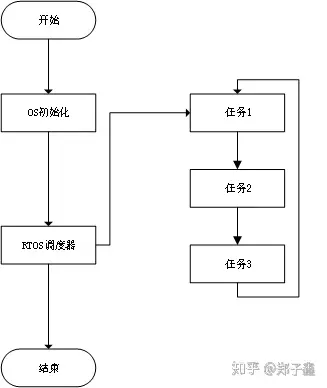
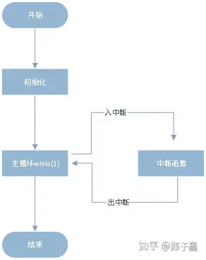

FreeRTOS基础
实时操作系统
何为实时操作系统
说道操作系统大家想到往往是Windows，Linux 。在对于数以亿计的物联网设备来说这两种系统在其中所占的比例少之又少。在物联网中大多数的设备使用的都是实时操作系统。先说说什么是操作系统。所谓操作系统就是能够统一管理计算机硬件和软件的计算机程序，说到底它还是程序，只不过操作系统运行在所有程序的最下面一般的用户是看不到。那什么是实时操作系统那？实时操作系统英文real-time operating system简称RTOS。实时的概念是相对于操作系统而言的，说的直白点就是实时操作系统比操作系统快，它能快速反应各种操作。但是正所谓鱼和熊掌不可兼得，实时操作系统速度快的同时伴随着的就是软件代码相对比较简单，如果软件特别庞大的话还是需要Windows，linux这种通用的操作系统。
当然实时操纵系统并不是速度快一个优点，它还有高稳定性，基础内核体积小只有几kb大小，而这些优点恰恰是物联网设备所需要的。物联网设备的功能越来越多，代码量越来越大了，那种简单的单片机程序已经很难满足现有物联网设备的需求了。现在生产的大部分物联网设备都是基于实时操作系统开发的。一些有实力的公司都发布了自己的实时操作系统（RTOS）。阿里的AliOS-Things ,华为的Huawei LiteOS，腾讯的TencentOS-tiny，亚马逊收购FreeRTOS,国内做实时操作系统比较有名的RT-Thread最近拿到了近亿元的投资。这些公司把大量资金投入进来无非就是想在未来物联网的世界中占有先机。
对于普通开发者实时操纵系统的意义
我个人觉得这就是一门手艺，我给嵌入式工程师的定位是现代的手艺人。何为手艺人？不过是有一技之长吧了，丰年发不了财，荒年饿不死而已。其实我们和几十年前的木匠，泥瓦匠没有区别，只不过工具变成了键盘。多学一门技能就会让多一个营生的手段。在工作的这几年我明显的能够发现单片机开发越来越简单，各个芯片制造商不断的推到自家的软件开发辅助工具，使得工程师开发起来越来越容易，以stm32为例，一个stm32cubemx解决了大部分代码需求，前几年写的大段代码，现在有可能只需要在cubemx选择几个配置就解决。这也导致嵌入式开发的门槛越来越低，如果自己满足现状的话，早晚会被时代淘汰。学习操作系统势在必行。
题外话：
我给出的学习路线是：
单片机--------->实时操作系统------------->Linux
以上只是根据我的个人经历给出的建议并不是适合所有人，为什么是这样的路线那？有的人会说我可以直接学习linux啊，为什么还要学习单片机那？以我个人经验来说如果你把自己定位一个纯软件工程师应用层开发的话，可以直接学习Linux ，学习应用开发即可。但是如果你喜爱那个成无为一个嵌入式工程师的话那就必须要掌握一些软硬件知识。如果没有基础直接直接学习Liunx内核的话，入门是很难的，基本上都会半途而废。
实时操作系统在项目开发中的优势
1.提升效率：当项目设计的任务比较多，单靠开发人员自己来管理这些任务的话会是一个比较麻烦的事情。往往开发到最后管理任务的代码比实际实现功能代码都多，此时实时操作系统的优势就显现出来了，他可以帮你管理这些任务，处理任务之间的逻辑。开发人员只需要开发功能即可，这样既简化了开发流程，也提供了开发效率。
2. 沟通简化：实时操作系统都是统一的API接口，降低了开发难度和多人配合时的沟通成本，多人开发时大家都使用统一的API，大家只要定义基本的接口就可以了，不用去指定复杂的API文档。
3. 移植方便：对同一个公司的产品来说往往涉及到产品更新换代，在没有操作系统的情况下更换芯片是一件很麻烦的事，有了操作系统这个问题就简单，只要移植底层的操纵系统接口即可。
4. 厂商需要：大多物联网方案提供商都会提供自己的物联网操作系统，一般这些厂商都定义好自己的云端操作接口，如果想熟练的应用这些API，就不必须先弄明白这些操作系统。
学习哪种实时操作系统
先给出答案，我推荐学习freertos。原因在于入门简单，应用广泛，资料多。有人可能会说ucos资料也很多啊 。的确如此在我大学的时候ucosii特别流行，现在又推出了ucosiii。但是它并不是免费的，虽然可以看到源代码，但想应用到产品当中就要付钱给他，在前几年大家可以不重视这个问题，毕竟在国内也没有那么严格。可对于越来越重视知识产权的今天来说这是一个致命伤，而且市面上有那么多免费的实时操作系统它也没有什么优势，没必要选择它。
在一个就是国内的一些实时操作系统(AliOS-Things ,Huawei LiteOS，TencentOS-tiny)并不适合初学者，原因在于这些操作系统代码量比较大，而且只有一小部分是操作系统内核代码打大部分代码都是用于实现他们自家功能的代码，这使得初学者在一开始学习的时候会一头雾水，不知道从哪里学起。
最后就说道freertos了，freetos应用广泛，其中乐鑫的ESP8266和ESP32的软件框架都是基于freertos实现的。我们可以从官网下载到最新的代码，移植起来特别简单，而它本身的代码量也不是很大。特别适合初学者。好多开发板厂商(正点原子，野火，安富莱等)都有freertos的视频教程。
FreeRTOS起源
先说一下FreeRTOS的起源，FreeRTOS是由Richard Barry在2003年由设计的，由于其设计的小巧简单，整个核心代码只有3到4个C文件。在设计之初就异军突起，累计开发者数百万，是目前市场占有率最高的RTOS，现在FreeRTOS已经支持三十多种芯片，基本包含市场上所有的微控制器。FreeRTOS在2018年被亚马逊收购，继续遵循GPLV2许可协议完全免费。 Richard Barry为了让代码容易阅读、移植和维护，大部分的代码都是以C语言编写，只有一些内核调度函数采用汇编编写。
获取源码
freeRTOS官网，进入官网点击download FreeRTOS,按照提示下载源码。
最新的版本是10.2.1，下载完成后是一个exe文件，点击解压。
命名规则
FreeRTOS核心源码文件的编写遵循MISRA（The Motor Industry Software Reliability Association 汽车工业软件可靠性联会）代码规则，同时支持各种编译器
变量
uint32_t定义的变量都加上前缀ul，u代表unsigned 无符号，l代表long长整型。
uint16_t定义的变量都加上前缀us。u代表unsigned无符号，s代表short短整型。
uint8_t定义的变量都加上前缀uc。u代表unsigned无符号，c代表char字符型。
size_t 定义的变量也要加上前缀ux。枚举变量会加上前缀e。 指针变量会加上前缀p。
函数
加上了static声明的函数，定义时要加上前缀prv(这个是单词private的缩写)。
带有返回值的函数，根据返回值的数据类型，加上相应的前缀，如果没有返回值，即void类型 ，函数的前缀加上字母v。
根据文件名，文件中相应的函数定义时也将文件名加到函数命名中，比如tasks.c文件中函数vTaskDelete，函数中的task就是文件名中的task。
宏定义
据宏定义所在的文件，文件中的宏定义声明时也将文件名加到宏定义中，比如宏定义configUSE_PREEMPTION 是定义在文件 FreeRTOSConfig.h里面。宏定义中的config就是文件名中的config。另外注意，前缀要小写。
除了前缀，其余部分全部大写，同时用下划线分开。
自定义数据类型
主要有4中类型 ：
TickType_t：如果使能宏定义configUSE_16_BIT_TICKS，定义为16位无符号类型，如果没有使能这个宏，则表示32位无符号类型。
BaseType_t:对于32位的处理器，定位32位有符号数，对于16位处理器，则表示16位有符号数。
UBaseType_t：BaseType_t的无符号类型。
STackType_t：栈变量的数据类型，16位处理器就对应16位变量，32位处理器对应32位变量.
FreeRTOS 初探
RTOS工作流程
RTOS工作的一般流程

单片机工作的一般流程

任务TASK我们暂时可以理解为一个while(1)的死循环。不死不休的执行着里面的程序。至于什么时间切换到下一个任务，就需要我们在while(1)中告诉调度器我们在什么时候想切换任务了。
调度器：就是负责根据当前条件切换到相应的任务中。
我们可以认为FreeRTOS跟单片机程序一样，它的调度器就是在中断函数中切换任务。这样一想FreeRTOS是不是一下就简单了。
FreeRTOS创建任务和运行任务
如何开始写FreeRTOS的应用程序，我的目的是让读者能够快速上手FreeRTOS，其中有所遗漏则学需要读者自己补齐。
创建任务: 使用函数xTaskCreate ，这个函数是freeRTOS提供的创建任务的函数，FreeRTOS官方已经提供了详细的注释，如果有阅读英文的能力最好是看官方提供的注释。
BaseType_t xTaskCreate(
TaskFunction_t pvTaskCode, // 函数指针
const char * const pcName, // 函数名称
configSTACK_DEPTH_TYPE usStackDepth,//堆栈大小
void *pvParameters,//函数参数
UBaseType_t uxPriority,//优先级
TaskHandle_t *pvCreatedTask//任务句柄，保存任务的结构体
);
//任务函数实例
void vTaskCode( void * pvParameters )
{
for( ;; )
{
// Task code goes here.
}
}2. 参数解释：
函数指针就是我们执行功能的函数指针，他的格式为 void vTaskCode( void * pvParameters )
函数名称则是在系统中保存的一个字符串，这个一般是给开发者看的，开发者可以直观的看到函数的名字，计算机其实是不需要的。
堆栈大小，堆栈大小的意思就是这个任务所能运行的内存的大小，也就是说整个任务只能运行在这段内存中，所以在定义这个参数时应该根据函数的功能预估出函数所堆栈大小。
函数参数，这个参数一般是用于向给任务传入参数时使用，因为函数指针的格式一定规定好了，所以只能以指针的形式将参数传递到函数内部了，但是一般情况下这个参数是不需要的传入NULL即可。
优先级：定义的任务在整个系统中所执行的时机，FreeTROS的优先级是从0～configMAX_PRIORITIES，0优先级最小，系统已经默认分配了，开发者从优先级1开始分配。
任务句柄，这个参数本质上是一个结构体，这个结构体中保存了当前任务的一些信息，如果想在其他任务中使用这个函数，只需要使用这个句柄就可以找到这个任务了。
3. 任务运行
在调用完创建任务函数之后，还需要执行vTaskStartScheduler() 开始运行调度器，
vTaskStartScheduler();
执行完vTaskStartScheduler后，系统就会按照当前任务中谁的任务优先级高，运行谁的规则执行（抢占式优先级）。
4. 例程展示
#include "stdio.h"
#include "FreeRTOSconfig.h"
/*tskIDLE_PRIORITY为系统最低优先级 0*/
#define TASK1_PRIORITY ( tskIDLE_PRIORITY + 1 )
#define TASK2_PRIORITY ( tskIDLE_PRIORITY + 2 )
#define TASK3_PRIORITY ( tskIDLE_PRIORITY + 3 )
#define TASK_STACK_SIZE 512
void vTaskFunction1( void * pvParameters )
{
for( ;; )
{
printf("vTaskFunction1 \n");
vTaskDelay(100);
}
}
void vTaskFunction2( void * pvParameters )
{
for( ;; )
{
printf("vTaskFunction2 \n");
vTaskDelay(100);
}
}
void vTaskFunction3( void * pvParameters )
{
for( ;; )
{
printf("vTaskFunction3 \n");
vTaskDelay(100);
}
}
int main(void)
{
...
xTaskCreate( vTaskFunction1, "TASK1", TASK_STACK_SIZE, NULL, TASK1_PRIORITY, NULL );
xTaskCreate( vTaskFunction2, "TASK2", TASK_STACK_SIZE, NULL, TASK2_PRIORITY, NULL );
xTaskCreate( vTaskFunctio3n, "TASK3", TASK_STACK_SIZE, NULL, TASK3_PRIORITY, NULL );
vTaskStartScheduler();
while(1){
//永远不会执行到这里！
}
return 0;
}以上是一个最简单了示例，我在每一个函数中都调用了vTaskDelay这个函数，vTaskDelay这个函数是延时函数(相对延时，延时时间并不准确)，调用这个函数的原因在于跳出当前任务，因为RTOS是抢占是调度器，就是移植执行最好优先级的任务，所以如果不让最高优先级停下来的话 ，其他任务是不可能有执行机会的。
vTaskDelay函数就是让当前任务进入到阻塞状态，让任务进行切换，等延时时间到了调度器查看当前任务是不是最好优先级的任务，如果是就执行这个任务。在实际应用当中不一定只能使用vTaskDelay函数进行任务切换，在之后我会介绍使用其他的方式切换任务。
5. 任务状态
刚刚我写到阻塞这个词，挂起状态是表述FreeRTOS任务的当前所处的状态，根据当前的状态调度器判断当前任务是否应该被执行。 FreeRTOS有四个任务状态 Running 运行态 : 当任务正在运行时这个任务就工作在运行态 Ready 就绪态 : 指能够运行，但是当前的CPU被更高优先级的任务所占用 Blcokd 阻塞态 : 任务一直处在等待信号量，消息队列，事件标志的状态称为阻塞态。（可以理解成被阻塞不能往下运行了） Suspended 挂起态 : * 类似于阻塞态，但是这个状态是通过调用vTaskSuspend()函数引起的，挂起后任务不能执行，只有调用xTaskResume()函数才能将任务从挂起状态中恢复出来。
FreeRTOS处理共享资源，即任务之间同步和通信的机制
2. 什么是共享资源？共享资源就是你在不同任务之间都会调用同一个资源，类似裸机程序中的全局变量，在裸机程序中，我们可以在任意时刻访问这个变量，但是当我们在RTOS中却不能，原因在于实时操作系统动态的根据调度器切换任务，变量在什么时候被改变我们是不知道的，假如多个任务同时使用一个变量的话，这就会导致程序错乱。
举例说明：
int buf[2]={0};
void task1_func(void)
{
...
int sum = 0;
buf[0] = 1;
buf[1] = 2;
while(1)
{
buf[0]++;
sum= buf[0]+buf[1];
printf("task 1 buf[0] : %d \n",buf[0]);
printf("task 1 buf[1] : %d \n",buf[1]);
printf("task 1 sum : %d \n",sum);
...
}
}
void task2_func(void)
{
...
buf[0] = 1;
buf[1] = 2;
while(1)
{
buf[0]++;
buf[1]++;
printf("task 2 buf[0] : %d \n",buf[0]);
printf("task 2 buf[1] : %d \n",buf[1]);
printf("task 2 sum : %d \n",sum);
...
}
}我们来分析一下sum值会是多少？ 按照裸机代码分析：sum = 2+2 = 4
但是实际情况有可能会不同:
假设当task1函数执行完buf[0]++后,切换到任务task2，task2也执行了buf[0]++，此时buf[0]=3，在切换回task1，此时在执行sum=buf[0]+buf[1]=3+2=5,这和我们想要的结果完全不同，当然只是我举的例子实际情况有可能和我说的不同，但我只想想说明这个问题，让人明白RTOS中不能使用这样的全局变量的原因。
3. 那么freeRTOS如何解决这个问题那？它定义了几种特殊的数据类型来处理任务之间的消息同步和消息共享机制。有事件标志组，消息队列，信号量(计数信号量，二值信号量，互斥信号量)等。还有一种比较特殊的方式就是控制调度锁。 我主要想将的是两个一个任务机制，另外一个就是消息队列，因为诸如信号量这些都是基于消息队列完成的。 3.1 任务调度锁应用 调度锁：RTOS提供的调度器开关函数，如果某个任务调用了调度锁开关函数，处于调度锁开和调度锁关之间的代码在执行期间是不会被高优先级的任务抢占的，即任务调度被禁止。 对应函数：
void vTaskSuspendAll( void )//字面理解就是延迟挂起所有任务
BaseType_t xTaskResumeAll( void )// 恢复所有任务
/*注意：这两个函数必须成对出现！*/举例：
task1_func()
{
if(flag==1){
vTaskSuspendAll();//开启调度锁
led_blink();
vTaskSuspendAll();//关闭调度锁
}
}3.2 消息队列应用 消息队列我们可以理解成裸机编程中的数组，只不过在操作系统中这个数组必须按照操作系统的要求来操作。
任务1 将数据发送给消息队列，任务2冲消息队列中接收数据。FreeRTOS的消息采用的是先入先出（FIFO）原则。 特殊情况：
任务1向消息队列发送数据时，任务2取出数据，但是当发送数据的速度比取出的快就会导致消息队列放满的青睐。这个时候FreeRTOS在发送函数中提供超时等待，用户可以设置这个时间，当超出这个时间就溢出不处理。
还有就是取出的比放入的快，导致消息队列空，有可以设置超时等待，当超过时间之后也溢出不处理。
消息队列API:
/*创建队列*/
/**
* uxQueueLength 消息队列支持的消息个数
* uxItemSize 每一个消息的多少个字节
*/
xQueueCreate( uxQueueLength, uxItemSize )
/*发送消息*/
/**
* xQueue 消息队列句柄，靠这个参数找到想要操作的消息队列
* pvItemToQueue 要传递消息的地址
* xTickToWait 当消息队列满脸之后，等待消息队列的最大时间 ，一般设置成最大portMAX_DELAY
*/
xQueueSend( xQueue, pvItemToQueue, xTicksToWait)
/*发送消息*/
/**
* xQueue 消息队列句柄，靠这个参数找到想要操作的消息队列
* pvItemToQueue 要传递消息的地址
* xTickToWait 当消息队列满脸之后，等待消息队列的最大时间，一般设置成最大portMAX_DELAY
*/
xQueueReceive( xQueue, pvBuffer, xTicksToWait ) 举例说明：
#define TASK1_TASK_PRIO 2 //优先级
#define TASK1_STK_SIZE 256 //堆栈大小
TaskHandle_t Task1Task_Handler; //任务句柄
void task1_task(void *pvParameters);//任务函数
#define TASK2_TASK_PRIO 3
#define TASK2_STK_SIZE 256
TaskHandle_t Task2Task_Handler;
void task2_task(void *pvParameters);
#define MSG_Q_NUM 1
QueueHandle_t Message_Queue;// 定义消息队列
int main(void)
{
... //初始化
Message_Queue=xQueueCreate(MSG_Q_NUM,sizeof(u8)); //创建消息队列
/*创建任务*/
xTaskCreate((TaskFunction_t )task2_task,
(const char* )"task2_task",
(uint16_t )TASK2_STK_SIZE,
(void* )NULL,
(UBaseType_t )TASK2_TASK_PRIO,
(TaskHandle_t* )&Task2Task_Handler);
xTaskCreate((TaskFunction_t )task2_task,
(const char* )"task2_task",
(uint16_t )TASK2_STK_SIZE,
(void* )NULL,
(UBaseType_t )TASK2_TASK_PRIO,
(TaskHandle_t* )&Task2Task_Handler);
vTaskStartScheduler(); //开始调度
}
//任务1 函数
void task1_task(void *pvParameters)
{
u8 key=10;
BaseType_t err;
while(1)
{
if((Key_Queue!=NULL))
{
err=xQueueSend(Message_Queue,&key,10);//发送队列
if(err==errQUEUE_FULL)
{
printf("error\r\n");
}
}
vTaskDelay(10);
}
}
void task2_task(void *pvParameters)
{
u8 key;
while(1)
{
if(Key_Queue!=NULL)
{
if(xQueueReceive(Key_Queue,&key,portMAX_DELAY))//接收队列
{
printf("key = %d \n",key);
}
}
vTaskDelay(10);
}
}